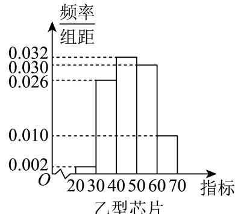
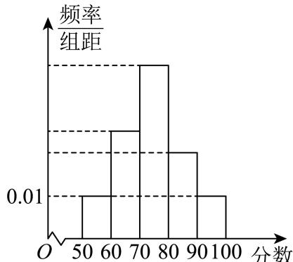
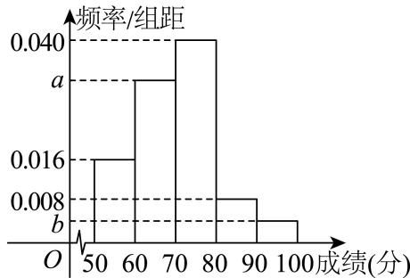

通项、常数项与系数定位
依据通项指数和系数定义定位目标项，注意负号与指数识别。
嘉定 · 第7题 ★★☆☆☆ · 教师预估
本题资料或解析有待核事项，预览不可作为已审定成品。
在 9 的二项展开式中， 的系数为
奉贤 · 第6题 ★★☆☆☆ · 教师预估
本题资料或解析有待核事项，预览不可作为已审定成品。
5 的二项展开式中的常数项为 ．（用数字作答）
宝山 · 第4题 ★☆☆☆☆ · 教师预估
…
在(x+2)5的展开式中x3的系数为
崇明 · 第4题 ★☆☆☆☆ · 教师预估
(x − 1)7的二项展开式中x3的系数为
普陀 · 第4题 ★☆☆☆☆ · 教师预估
本题资料或解析有待核事项，预览不可作为已审定成品。
若 ，则 的值为
浦东 · 第4题 ★★☆☆☆ · 教师预估
本题资料或解析有待核事项，预览不可作为已审定成品。
6 的展开式中 的系数为 （用数字作答）
虹口 · 第4题 ★☆☆☆☆ · 教师预估
在(x−2)6的二项展开式中， 项的系数为
金山 · 第5题 ★☆☆☆☆ · 教师预估
(3x − 1)6的二项展开式中， 项的系数为
长宁 · 第6题 ★★☆☆☆ · 教师预估
6 的二项展开式中的常数项是
闵行 · 第6题 ★★☆☆☆ · 教师预估
8 的二项展开式中， 项的系数为
青浦 · 第9题 ★★☆☆☆ · 教师预估
本题资料或解析有待核事项，预览不可作为已审定成品。
的展开式中， 项的系数为
黄浦 · 第5题 ★☆☆☆☆ · 教师预估
本题资料或解析有待核事项，预览不可作为已审定成品。
6 的二项展开式的常数项为
赋值求和与组合数性质
用特殊赋值或组合数对称性化简，并检查下标范围。
宝山 · 第7题 ★★☆☆☆ · 教师预估
…
已知关于正整数x的方程 ，则该方程的解为
徐汇 · 第3题 ★☆☆☆☆ · 教师预估
本题资料或解析有待核事项，预览不可作为已审定成品。
在(1+x)n的二项展开式中，若各项系数和为32，则正整数n的值为 .
松江 · 第7题 ★★☆☆☆ · 教师预估
本题资料或解析有待核事项，预览不可作为已审定成品。
已知 ，则
排列限制与有限映射计数
按必选、相邻和函数对应条件分类，处理重复及排除情况。
奉贤 · 第5题 ★☆☆☆☆ · 教师预估
本题资料或解析有待核事项，预览不可作为已审定成品。
若A, B, C, D, E五人站成一排，如果A, B必须相邻，那么排法共 种.
奉贤 · 第12题 ★★★★☆ · 教师预估
本题资料或解析有待核事项，预览不可作为已审定成品。
已知集合 是由函数 的图象上两两不相同的点构成的点集，集合 ，其中 ．若集合S中的元素按照从小到大的顺序排列能构成公差为d的等差数列，当 时，则符合条件的点集M的个数为
崇明 · 第12题 ★★★☆☆ · 教师预估
本题资料或解析有待核事项，预览不可作为已审定成品。
已知函数 的定义域 ，值域 ，则函数 为增函数的概率是
浦东 · 第12题 ★★★★★ · 教师预估
本题资料或解析有待核事项，预览不可作为已审定成品。
已知在复数集中，等式 对任意复数x恒成立，复数 在复平面上对应的4个点为某个单位圆内接正方形的4个顶点， ，则满足条件的不同集合 个数为
虹口 · 第12题 ★★★☆☆ · 教师预估
本题资料或解析有待核事项，预览不可作为已审定成品。
已知项数为10的数列 中任一项均为集合 中的元素，且相邻两项满足 ．若 中任意两项都不相等，则满足条件的数列 有 个
闵行 · 第8题 ★★☆☆☆ · 教师预估
本题资料或解析有待核事项，预览不可作为已审定成品。
从10名数学老师中选出3人安排在3天的假期中值班，每天有且只有一人值班．若老师甲必须参加且不安排在假期第一天值班，则不同的值班安排方法种数为
闵行 · 第9题 ★★★☆☆ · 教师预估
已知 （i为虚数单位，n为正整数），当 取遍所有正整数时， 的值中不同虚数的个数为
青浦 · 第10题 ★★☆☆☆ · 教师预估
本题资料或解析有待核事项，预览不可作为已审定成品。
已知函数 的定义域为{−2, −1, 1, 2}，值域为{−2, 2}，则满足条件的函数 最多有个.
抽样、比赛与概率计数
明确抽样或比赛停止规则，以组合、枚举或有限轮次分解计算。
奉贤 · 第18题 ★★★☆☆ · 教师预估
本题资料或解析有待核事项，预览不可作为已审定成品。
某芯片代工厂生产甲、乙两种型号的芯片，为了解芯片的某项指标，从这两种芯片中各抽取100件进行检测，获得该项指标的频率分布直方图，如图所示：


假设数据在组内均匀分布，以样本估计总体，以事件发生的频率作为相应事件发生的概率
(1) (6分)求频率分布直方图中x的值并估计乙型芯片该项指标的平均值（同一组中的数据用该组区间的中点值为代表）；
(2) (8分)已知甲型芯片指标在[80, 100)为航天级芯片，乙型芯片指标在[60, 70)为航天为航天级芯片．现分别采用分层抽样的方式，从甲型芯片指标在[70,90)内取2件，乙型芯片指标在[50,70)内取4件，再从这6件中任取2件，求至少有一件为航天级芯片的概率
宝山 · 第19题 ★★★☆☆ · 教师预估
…
甲乙两人轮流掷质地均匀的骰子，每人每次掷两颗
(1) (4分)甲掷一次，求两颗骰子点数不同的概率；
(2) (4分)甲乙各掷一次，求甲的点数和恰好比乙的点数和大7的概率；
(3) (6分)若第一次掷出点数之和大于6的人为胜者，同时比赛结束；否则，由另一人继续投掷，直到比赛结束.例如，甲乙先后轮流掷出的点数之和为：5、4、3、7，此时乙为胜者.设甲先投掷，求甲最终获胜的概率.
崇明 · 第19题 ★★★☆☆ · 教师预估
王老师将全班40名学生的高一数学期中考试（满分100分）成绩分成5组，绘制成如图所示的频率分布直方图，现将[50, 60)记作第一组，[60, 70)、[70, 80)、[80, 90)、[90, 100]分别记作第二、三、四、五组．已知第一组、第二组的频率之和为0.3，第一组和第五组的频率相同

(1) (4分)估计此次考试成绩的平均值（同一组数据用该组数据的中点值代替）；
(2) (5分)王老师将测试成绩在[80, 90)和[90, 100]内的试卷进行分析，再从中选2人的试卷进行优秀答卷展示，求被选中进行优秀答卷展示的这2人的测试成绩至少1个在[90,100]内的概率；
(3) (5分)已知第二组考生成绩的平均数和方差分别为65和40，第四组考生成绩的平均数和方差分别为83和70，据此计算第二组和第四组所有学生成绩的方差
普陀 · 第19题 ★★★☆☆ · 教师预估
本题资料或解析有待核事项，预览不可作为已审定成品。
机器人竞技是继电子竞技之后热门的科技竞技项目.某区为了参加市机器人竞技总决赛，开展了区内选拔赛，其中A、B、C、D四人进入区内个人组决赛，按照规则每人与其他三人各进行一场比赛，且这三场比赛互相独立.下表统计的是A在近期热身中分别与B、C、D三人比赛的情况.
| 对手 | B | C | D |
|---|---|---|---|
| 比赛的次数 | 12 | 10 | 15 |
| A获胜的次数 | 4 | 5 | 12 |
(1) (6分)根据表格中的数据，试估计在区内决赛中A至少获胜一场的概率；
(2) (8分)根据表格中的数据，请给B、C、D三人设计一个出场顺序，使得A在这三场比赛中连胜两场的概率最大，并说明理由.
杨浦 · 第19题 ★★★☆☆ · 教师预估
本题资料或解析有待核事项，预览不可作为已审定成品。
为加强学生睡眠监测督导，学校对高中三个年级学生的日均睡眠时间进行调查.根据分层随机抽样法，学校在高一､高二和高三年级中共抽取了100名学生的日均睡眠时间作为样本，其中高一35人，高二33人.已知该校高三年级一共512人.
(1) (4分)学校高中三个年级一共有多少个学生？
(2) (4分)若抽取100名学生的样本极差为2，数据如下表所示（其中 是正整数）
| 日均睡眠时间（小时） | 8.5 | 9 | 9.5 | 10 | |
|---|---|---|---|---|---|
| 学生数量 | 32 | 13 | 11 | 4 |
求该样本的第40百分位数。
(3) (6分)从这100名学生的样本中随机抽取三个学生的日均睡眠时间，求其中至少有1个数据来自高三学生的概率.
浦东 · 第19题 ★★★★☆ · 教师预估
本题资料或解析有待核事项，预览不可作为已审定成品。
申辉中学为期两周的高一、高二年级校园篮球赛告一段落．高一小A、高二小B分别荣获了高一年级和高二年级比赛的年级MVP（最有价值球员）．以下是他们在各自8场比赛的二分球和三分球出手次数及其命中率
| 人物 | 二分球出手 | 二分球命中率 | 三分球出手 | 三分球命中率 |
|---|---|---|---|---|
| 小A | 100次 | 80% | 100次 | 40% |
| 小B | 190次 | 70% | 10次 | 30% |
现以两人的总投篮命中率（二分球+三分球）较高者评为校MVP（总投篮命中率=总命中次数÷总出手次数）
(1) (4分)小C认为，目测小A的二分球命中率和三分球命中率均高于小B，此次必定能评为校MVP，试通过计算判断小C的想法是否准确？
(2) (10分)小D是游戏爱好者，设置了一款由游戏人物小a、小b轮流投篮对战游戏，游戏规则如下：①游戏中小a的命中率始终为0.4，小b的命中率始终为0.3，②游戏中投篮总次数最多为 次，且同一个游戏人物不允许连续投篮．③游戏中若投篮命中，则游戏结束，投中者获得胜利；若直至第k次投篮都没有命中，则规定第二次投篮者获胜．若每次游戏对战前必须设置“第一次投篮人物”和“k”的值，请解答以下两个问题
（ⅰ）若小a第一次投篮，请证明小a获胜概率大；
（ⅱ）若小b第一次投篮，试问谁的获胜概率大？并说明理由
虹口 · 第19题 ★★★☆☆ · 教师预估
本题资料或解析有待核事项，预览不可作为已审定成品。
2024年法国奥运会落下帷幕．某平台为了解观众对本次奥运会的满意度，随机调查了本市1000名观众 ， 得 到 他 们 对 本 届 奥 运 会 的 满 意 度 评 分 （ 满 分 100 分 ）， 平 台 将 评 分 分 为[50, 60)、 [60, 70)、 [70, 80)、 [80, 90)、 [90, 100]共5层，绘制成频率分布直方图（如图1所示）．并在这些评分中以分层抽样的方式从这5层中再抽取了共20名观众的评分，绘制成茎叶图，但由于某种原因茎叶图受到了污损，可见部分信息如图2所示

图1

图2
(1) (4分)求图2中这20名观众的满意度评分的第35百分位数；
(2) (4分)若从图2中的20名观众中再任选取3人做深度采访，求其中至少有1名观众的评分大于等于90分的概率；
(3) (6分)已知这1000名观众的评分位于[50, 80)上的均值为67，方差为64.7，位于[50, 100]上的均值为73，方差为134.6，求这1000名观众的评分位于[80, 100]上的均值与方差
金山 · 第11题 ★★★☆☆ · 教师预估
本题资料或解析有待核事项，预览不可作为已审定成品。
抛掷一枚质地均匀的硬币n次（其中n为大于等于2的整数），设事件A：n次中既有正面朝上又有反面朝上，事件B：n次中至多有一次正面朝上，若事件A与事件B是独立的，则n的值为
金山 · 第19题 ★★★☆☆ · 教师预估
某高中举行了一次知识竞赛．为了了解本次竞赛成绩情况，从中抽取了部分学生的成绩作为样本进行统计．将成绩进行整理后，依次分为五组（[50, 60), [60, 70), [70, 80), [80, 90), [90, 100]），其中第1组的频率为第2组和第4组频率的等比中项．请根据下面的频率分布直方图（如图所示）解决下列问题：

(1) (4分)求a、b的值；
(2) (4分)从样本数据在[50,60),[70,80)两个小组内的学生中，用分层抽样的方法抽取7名学生，再从这7名学生中随机选出2人，求选出的两人恰好来自不同小组的概率；
(3) (6分)某老师在此次竞赛成绩中抽取了10名学生的分数： 已知这10个分数的平均数x = 88，方差– ，若剔除其中的95和81两个分数，求剩余8个分数的平均数与方差
闵行 · 第19题 ★★★☆☆ · 教师预估
本题资料或解析有待核事项，预览不可作为已审定成品。
为了解某市高三学生的睡眠时长，从该市6.6万名高三学生中随机抽取600人，统计他们的日均睡眠时长及分布人数如下表所示：
| 睡眠时长（小时） | |||
|---|---|---|---|
| 人数 | 150 | 270 | 180 |
注：睡眠时长在[8, 10]的为睡眠充足，在[6, 8)的为睡眠良好，在[4, 6)的为睡眠不足
(1) (4分)估计该市6.6万名高三学生中日均睡眠时长大于等于6小时的人数约为多少？
(2) (4分)估计该市高三学生日均睡眠时长；
(3) (6分)若从这600名学生中利用分层抽样的方法抽取20人，再从这20人中随机抽取4人做进一步访谈调查，求这4人中既有睡眠充足，又有睡眠良好，也有睡眠不足学生的概率
青浦 · 第19题 ★★★☆☆ · 教师预估
本题资料或解析有待核事项，预览不可作为已审定成品。
第七届中国国际进口博览会于 2024 年 11 月 5 日至 10 日在上海举办，某公司生产的 A、B 、C 三款产品在博览会上亮相，每一种产品均有普通装和精品装两种款式，该公司每天产量如下表: （单位:个）
| 产品A | 产品B | 产品C | |
|---|---|---|---|
| 普通装 | 180 | 400 | |
| 精品装 | 300 | 420 | 600 |
现采用分层抽样的方法在某一天生产的产品中抽取 100 个，其中 B款产品有30个
(1) (4分)求 n的值；
(2) (4分)用分层抽样的方法在C款产品中抽取一个容量为5的样本，从样本中任取 2个产品，求其中至少有一个精品装产品的概率;
(3) (6分)对抽取到的 B款产品样本中某种指标进行统计，普通装产品的平均数为10，方差为2，精品装产品的平均数为12，方差为1.8，试估计这天生产的 B款产品的某种指标的总体方差 （精确到 0.01 ）.
黄浦 · 第19题 ★★★☆☆ · 教师预估
A校高一年级共有学生330名，为了解该校高一年级学生的身高情况，学校采用分层随机抽样的方法抽取66名学生，其中女生32名，男生34名，测量他们的身高
(1) (4分)该校高一学生中男、女生各有多少名？
(2) (4分)若从这66名学生中随机抽取两名，求这两名都是男生的概率；
(3) (6分)在32名女生身高的数据中，其中一个数据记录有误，错将165cm记录为156cm，由错误数据求得这32个数据的平均数为161cm，方差为23.6875，求原始数据的平均数及方差．（平均数结果保留精确值，方差结果精确到0.01）